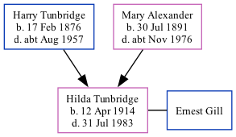

Hilda Gill (née Tunbridge) 1914 - 1983
[ Home ] | [ Calendar ] | [ Surnames Index ] | [ Family History ]The daughter of Harry Tunbridge (a ticket collector) and Mary Alexander, Hilda Tunbridge, the second cousin once-removed on the father's side of <a href="I1.html">Nigel Horne</a>, was born in Dover, Kent, England on Apr 12, 1914<span class="citation">1,2,3,4</span>. She married Ernest Gill in Dover around Nov 1933<span class="citation">5</span>.</p><p>Throughout her life, she lived on 31 Church Road in Dover on Jun 19, 1921<span class="citation">1</span> and on Sep 29, 1939<span class="citation">2</span>. <p>She died on Jul 31, 1983 in Dover<span class="citation">4</span>.
Parents
- Harry was born on Feb 17, 1876
- Mary Norquay was born on Jul 30, 1891
Citations
- 1921 Census Of England & Wales - Findmypast (was age 7 and the daughter of the head of the household)
- 1939 Register - Findmypast (was recorded at this address)
- England & Wales births 1837-2006 - Findmypast
- England & Wales deaths 1837-2007 - Findmypast
- England & Wales Marriages 1837-2005 - Findmypast
Media
England & Wales births 1837-2006 - BMD/B/1914/2/AZ/001595/003
England & Wales marriages 1837-2005 - BMD/M/1933/4/AZ/001266/087
England & Wales deaths 1837-2007 - BMD/D/1983/3/AZ/000316/139
1939 Register - TNA-R39-1710-1710B-015-31
1921 Census of England & Wales - GBC/1921/RG15/04534/0079/03
Family Tree
Generated by Ged2Site. Last updated on Jul 20, 2025